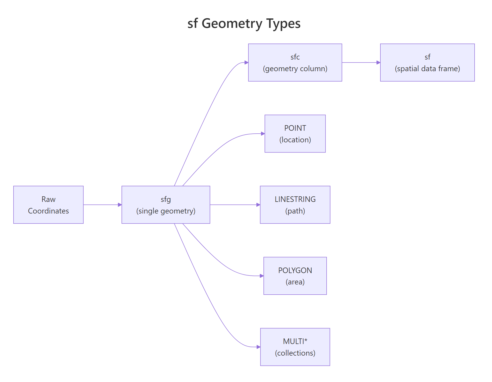
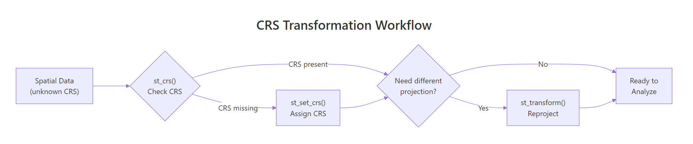

Spatial Data in R with sf: Shapefiles, CRS Transformation, and ggplot2 Maps
The sf (simple features) package is R's modern standard for working with spatial data — points, lines, and polygons stored as tidy data frames. It replaces the older sp package and connects seamlessly with dplyr for data manipulation and ggplot2 for mapping.
What does spatial data look like in R?
Spatial data connects locations on Earth to attributes you care about — city populations, river lengths, country boundaries. In R, the sf package stores this data as a regular data frame with one special column: a geometry column that holds the coordinates.
Let's create a simple spatial dataset and see what that looks like.
RInteractive R
# Load packages
library(sf)
library(ggplot2)
library(dplyr)
# Create a data frame of cities with coordinates
cities <- data.frame(
name = c("New York", "Los Angeles", "Chicago", "Houston", "Phoenix"),
state = c("NY", "CA", "IL", "TX", "AZ"),
pop_millions = c(8.3, 3.9, 2.7, 2.3, 1.6),
lon = c(-74.006, -118.244, -87.630, -95.370, -112.074),
lat = c(40.713, 34.052, 41.878, 29.760, 33.449)
)
# Convert to an sf object
cities <- st_as_sf(cities, coords = c("lon", "lat"), crs = 4326)
# Print the result
cities
#> Simple feature collection with 5 features and 3 fields
#> Geometry type: POINT
#> Dimension: XY
#> Bounding box: xmin: -118.244 ymin: 29.76 xmax: -74.006 ymax: 41.878
#> Geodetic CRS: WGS 84
#> name state pop_millions geometry
#> 1 New York NY 8.3 POINT (-74.006 40.713)
#> 2 Los Angeles CA 3.9 POINT (-118.244 34.052)
#> 3 Chicago IL 2.7 POINT (-87.63 41.878)
#> 4 Houston TX 2.3 POINT (-95.37 29.76)
#> 5 Phoenix AZ 1.6 POINT (-112.074 33.449)
Notice how it looks just like a regular data frame — except for that geometry column on the right. Each row stores a POINT with longitude and latitude. The header tells you the CRS (WGS 84, which is standard GPS coordinates) and the bounding box (the rectangle that contains all your points).
The built-in plot() function gives you a quick look at the data. It creates one panel per attribute column.
RInteractive R
# Quick plot — sf's built-in method
plot(cities)
The plot shows three mini-maps (one for each attribute column). Each point is colored by the attribute value. This is useful for a quick sanity check, but for publication-quality maps you'll want ggplot2 — we'll get there in a later section.
Key Insight
sf objects are just data frames with a geometry column. Every dplyr verb you already know — filter(), mutate(), summarise(), left_join() — works on sf objects. The geometry column tags along automatically.
Try it: Create an sf object called ex_places with 3 locations you know well. Include columns for "name" and "country", plus longitude and latitude. Set the CRS to 4326 and print it.
RInteractive R
# Try it: create your own sf object
ex_places <- data.frame(
name = c("Place 1", "Place 2", "Place 3"),
country = c("Country 1", "Country 2", "Country 3"),
lon = c(0, 0, 0), # replace with real coordinates
lat = c(0, 0, 0) # replace with real coordinates
)
ex_places <- st_as_sf(ex_places, coords = c("lon", "lat"), crs = 4326)
ex_places
#> Expected: a 3-row sf object with POINT geometries
Click to reveal solution
RInteractive R
ex_places <- data.frame(
name = c("London", "Tokyo", "Sydney"),
country = c("UK", "Japan", "Australia"),
lon = c(-0.118, 139.692, 151.209),
lat = c(51.509, 35.690, -33.869)
)
ex_places <- st_as_sf(ex_places, coords = c("lon", "lat"), crs = 4326)
ex_places
#> name country geometry
#> 1 London UK POINT (-0.118 51.509)
#> 2 Tokyo Japan POINT (139.692 35.69)
#> 3 Sydney Australia POINT (151.209 -33.869)
Explanation: st_as_sf() takes a regular data frame and converts the coordinate columns into a geometry column. The crs = 4326 argument sets the coordinate reference system to WGS 84.
What are the sf geometry types?
sf supports several geometry types. The three you'll use most often are POINT (a single location), LINESTRING (a connected path), and POLYGON (a closed boundary). Each maps to a real-world feature.
Geometry
Represents
Real-world examples
POINT
A single location
City, sensor, tree
LINESTRING
A connected path
Road, river, flight route
POLYGON
A closed area
Country, lake, building footprint
MULTIPOINT
Multiple locations
Chain of stores
MULTILINESTRING
Multiple paths
River system with tributaries
MULTIPOLYGON
Multiple areas
Hawaii (multiple islands, one state)
Let's create a LINESTRING to represent a simplified river path.
RInteractive R
# Create a LINESTRING — a simplified river path
river_coords <- matrix(c(
-90, 45, # start
-89, 43, # bend 1
-88, 41, # bend 2
-87, 40 # end
), ncol = 2, byrow = TRUE)
river_path <- st_sf(
name = "Example River",
geometry = st_sfc(st_linestring(river_coords), crs = 4326)
)
river_path
#> Simple feature collection with 1 feature and 1 field
#> Geometry type: LINESTRING
#> Geodetic CRS: WGS 84
#> name geometry
#> 1 Example River LINESTRING (-90 45, -89 43,...
The river is stored as a sequence of coordinate pairs connected in order. Now let's make a POLYGON — a closed shape where the first and last coordinates must match.
RInteractive R
# Create a POLYGON — a simplified lake boundary
lake_coords <- matrix(c(
-89.0, 42.0,
-88.0, 42.0,
-87.5, 41.5,
-88.0, 41.0,
-89.0, 41.0,
-89.5, 41.5,
-89.0, 42.0 # closes the ring (same as first point)
), ncol = 2, byrow = TRUE)
lake <- st_sf(
name = "Example Lake",
geometry = st_sfc(st_polygon(list(lake_coords)), crs = 4326)
)
lake
#> Simple feature collection with 1 feature and 1 field
#> Geometry type: POLYGON
#> Geodetic CRS: WGS 84
#> name geometry
#> 1 Example Lake POLYGON ((-89 42, -88 42, -...
Now let's plot all three geometry types together to see how they layer.
RInteractive R
# Plot all three geometry types together
ggplot() +
geom_sf(data = lake, fill = "lightblue", color = "steelblue") +
geom_sf(data = river_path, color = "blue", linewidth = 1.2) +
geom_sf(data = cities |> filter(name == "Chicago"),
color = "red", size = 4) +
theme_minimal() +
labs(title = "Three geometry types on one map")
The polygon (lake) renders as a filled shape, the linestring (river) as a line, and the point (Chicago) as a dot. ggplot2's geom_sf() figures out the correct visual representation automatically based on the geometry type.
Tip
MULTI* types hold collections under one row. Hawaii is a MULTIPOLYGON because its multiple islands are stored as one feature. Use st_cast() to convert between single and multi types when needed.

Figure 1: The four core geometry types in sf and how they nest: sfg → sfc → sf.
Try it: Create a POLYGON representing a triangle with vertices at (0,0), (1,0), (0.5,1), and back to (0,0). Store it in ex_triangle and plot it.
RInteractive R
# Try it: create a triangle polygon
ex_tri_coords <- matrix(c(
# your coordinates here
0, 0,
0, 0,
0, 0,
0, 0 # close the ring
), ncol = 2, byrow = TRUE)
ex_triangle <- st_sf(
geometry = st_sfc(st_polygon(list(ex_tri_coords)), crs = 4326)
)
plot(ex_triangle)
#> Expected: a triangle shape
Explanation: A polygon ring must close — the last coordinate repeats the first. st_polygon() takes a list of matrices (outer ring + optional holes).
How do you read spatial data files into R?
In your own projects, you'll usually start by reading spatial files from disk. The sf package's st_read() function handles all major formats — shapefiles, GeoJSON, GeoPackage, KML, and more.
Here's the pattern for the most common formats:
RInteractive R
# Reading spatial files (run these in RStudio with real files)
# Shapefile — point to the .shp file
# my_shapefile <- st_read("data/us_states/us_states.shp")
# GeoJSON — single file
# my_geojson <- st_read("data/countries.geojson")
# GeoPackage — modern alternative to shapefiles
# my_gpkg <- st_read("data/boundaries.gpkg", layer = "states")
Note
st_read() requires files on your local disk or a URL. The interactive code blocks on this page run in your browser and can't access local files. For the examples below, we create spatial data programmatically or convert from built-in R datasets. In your own RStudio projects, st_read("path/to/file.shp") is the standard entry point.
Warning
A shapefile is actually 4-6 files that must stay together. The .shp holds geometry, .dbf holds attributes, .shx is an index, and .prj stores the CRS. Move or delete any one of them and st_read() breaks. Modern alternatives like GeoPackage (.gpkg) bundle everything into a single file.
A practical workaround for getting real map data without files is to convert R's built-in map data to sf. The maps package contains world, US state, and country boundaries.
RInteractive R
# Convert built-in map data to sf (works everywhere, no files needed)
library(maps)
world_sf <- st_as_sf(maps::map("world", plot = FALSE, fill = TRUE))
head(world_sf, 5)
#> Simple feature collection with 5 features and 1 field
#> Geometry type: MULTIPOLYGON
#> Bounding box: xmin: -180 ymin: -42.64748 xmax: 180 ymax: 83.64513
#> Geodetic CRS: WGS 84
#> ID geometry
#> 1 Aruba MULTIPOLYGON (((-69.89912 ...
#> 2 Afghanistan MULTIPOLYGON (((74.89131 ...
#> 3 Angola MULTIPOLYGON (((23.9658 ...
#> 4 Anguilla MULTIPOLYGON (((-63.00122 ...
#> 5 Albania MULTIPOLYGON (((20.06396 ...
Now world_sf is a proper sf object with MULTIPOLYGON geometries for each country. You can use it exactly like data loaded from a shapefile — filter countries, transform projections, or plot with ggplot2.
Try it: Convert the US state map to an sf object using maps::map("state", plot = FALSE, fill = TRUE) and st_as_sf(). Print the first 3 rows.
RInteractive R
# Try it: convert state map to sf
ex_states <- st_as_sf(maps::map("state", plot = FALSE, fill = TRUE))
head(ex_states, 3)
#> Expected: 3-row sf object with state names and MULTIPOLYGON geometry
Click to reveal solution
RInteractive R
ex_states <- st_as_sf(maps::map("state", plot = FALSE, fill = TRUE))
head(ex_states, 3)
#> Simple feature collection with 3 features and 1 field
#> Geometry type: MULTIPOLYGON
#> Geodetic CRS: WGS 84
#> ID geometry
#> 1 alabama MULTIPOLYGON (((-87.46201 30...
#> 2 arizona MULTIPOLYGON (((-114.6374 34...
#> 3 arkansas MULTIPOLYGON (((-94.05103 33...
Explanation: maps::map() returns map data in a legacy format. st_as_sf() converts it into a tidy sf object with a geometry column.
What is a coordinate reference system and why does it matter?
Every spatial dataset needs a coordinate reference system (CRS) — the set of rules that tells R how the numbers in your geometry column relate to actual locations on Earth. Without a CRS, your coordinates are just abstract numbers.
There are two families of CRS to know:
Family
Units
Example
When to use
Geographic
Degrees (lon/lat)
WGS 84 (EPSG:4326)
Storing data, GPS coordinates, web maps
Projected
Meters or feet
UTM, Albers (EPSG:5070)
Measuring distances, computing areas, US maps
Geographic CRS stores positions as longitude and latitude on the globe's curved surface. Projected CRS flattens the globe onto a 2D plane — like peeling an orange and pressing the skin flat. Each projection distorts something (area, shape, distance, or direction), so you pick the one that preserves what you care about.
Let's check the CRS on our world map.
RInteractive R
# Check the CRS of our world map
st_crs(world_sf)
#> Coordinate Reference System:
#> User input: +proj=longlat +datum=WGS84
#> wkt:
#> GEOGCRS["WGS 84", ...
#> ID["EPSG",4326]]
The output confirms this is WGS 84 (EPSG:4326) — the most common geographic CRS. If you create spatial data from coordinates and forget to set a CRS, you'll get NA. Let's see how to assign one.
RInteractive R
# Create points WITHOUT a CRS (common mistake)
pts_no_crs <- st_as_sf(
data.frame(x = c(10, 20), y = c(50, 55)),
coords = c("x", "y")
)
st_crs(pts_no_crs)
#> Coordinate Reference System: NA
# Assign WGS84
pts_no_crs <- st_set_crs(pts_no_crs, 4326)
st_crs(pts_no_crs)
#> Coordinate Reference System:
#> User input: EPSG:4326
#> ...
Key Insight
WGS 84 (EPSG:4326) is the GPS standard. Almost all web maps, GPS devices, and downloaded datasets use it. When you have lon/lat coordinates and aren't sure which CRS to assign, WGS 84 is almost always correct.

Figure 2: Decision flow for checking, assigning, and transforming a CRS.
Try it: Create a data frame with 3 cities (include lon and lat columns), convert to sf with st_as_sf(), assign CRS 4326, and verify with st_crs().
RInteractive R
# Try it: create sf with CRS
ex_cities_df <- data.frame(
city = c("Berlin", "Paris", "Rome"),
lon = c(13.405, 2.352, 12.496),
lat = c(52.520, 48.857, 41.903)
)
ex_cities_sf <- st_as_sf(ex_cities_df, coords = c("lon", "lat"))
# Assign CRS here
# your code here
st_crs(ex_cities_sf)
#> Expected: EPSG:4326
Explanation: You can set the CRS directly in st_as_sf() with the crs argument, or after the fact with st_set_crs(). Both work — setting it upfront is cleaner.
How do you transform between coordinate systems?
st_set_crs() assigns a CRS to data that doesn't have one (it labels the coordinates). st_transform() reprojects the data — it recalculates every coordinate into a different coordinate system. This is the function you'll use to switch between projections.
A common scenario: your data is in WGS 84 (degrees), but you need meters for distance or area calculations. Let's transform the US states from WGS 84 to Albers Equal Area — a projection designed for the contiguous US that preserves area proportions.
RInteractive R
# Create US states sf object
us_states <- st_as_sf(maps::map("state", plot = FALSE, fill = TRUE))
# Transform from WGS84 to Albers Equal Area (EPSG:5070)
us_albers <- st_transform(us_states, crs = 5070)
# Compare the first state's coordinates
head(st_coordinates(us_states[1, ]), 3)
#> X Y L1 L2
#> 1 -87.46201 30.38968 1 1
#> 2 -87.48493 30.37249 1 1
#> 3 -87.52503 30.37249 1 1
head(st_coordinates(us_albers[1, ]), 3)
#> X Y L1 L2
#> 1 761750.1 -672580 1 1
#> 2 761476.5 -672771 1 1
#> 3 761043.8 -672619 1 1
The WGS 84 coordinates are in degrees (longitude, latitude). After transformation to Albers, they're in meters — much better for computing areas and distances.
Let's see the visual difference between the two projections.
RInteractive R
# Compare projections side by side
p1 <- ggplot(us_states) +
geom_sf(fill = "lightyellow", color = "gray40") +
labs(title = "WGS 84 (lon/lat)") +
theme_minimal()
p2 <- ggplot(us_albers) +
geom_sf(fill = "lightyellow", color = "gray40") +
labs(title = "Albers Equal Area (EPSG:5070)") +
theme_minimal()
p1
In the WGS 84 version, the map looks stretched east-west. The Albers projection gives the familiar, proportionally correct US shape.
RInteractive R
p2
Tip
Pick the right projection for your goal. For US maps, EPSG:5070 (Albers Equal Area) preserves area proportions — ideal for choropleths. For world maps, try "+proj=robin" (Robinson) for balanced shape and area. For local measurements, UTM zones give accurate distances.
Try it: Transform world_sf to Mollweide projection using "+proj=moll" and plot it. The Mollweide projection is an equal-area projection often used for world maps.
RInteractive R
# Try it: Mollweide world map
ex_world_moll <- st_transform(world_sf, crs = "+proj=moll")
ggplot(ex_world_moll) +
geom_sf() +
theme_minimal()
#> Expected: an oval-shaped world map
Explanation: st_transform() takes an sf object and reprojects it. The Mollweide projection creates the characteristic oval shape that preserves area — useful for showing relative country sizes accurately.
How do you create maps with geom_sf() in ggplot2?
geom_sf() is the ggplot2 layer built for sf objects. It automatically picks the right visual — polygons get filled, lines get stroked, points get plotted as dots. You use it exactly like any other ggplot layer, with aesthetic mappings for fill, color, size, and more.
Let's create a basic map of US states and then build up from there.
RInteractive R
# Basic US state map with ggplot2
ggplot(us_states) +
geom_sf(fill = "steelblue", color = "white", linewidth = 0.3) +
labs(title = "US States") +
theme_void()
theme_void() strips away axes and gridlines — perfect for maps where coordinate labels add clutter. Now let's layer two sf objects: states as polygons and cities as points on top.
RInteractive R
# Layer points on top of polygons
major_cities <- data.frame(
name = c("New York", "Los Angeles", "Chicago",
"Houston", "Phoenix", "Seattle", "Miami"),
pop = c(8.3, 3.9, 2.7, 2.3, 1.6, 0.7, 0.4),
lon = c(-74.0, -118.2, -87.6, -95.4, -112.1, -122.3, -80.2),
lat = c(40.7, 34.1, 41.9, 29.8, 33.4, 47.6, 25.8)
) |>
st_as_sf(coords = c("lon", "lat"), crs = 4326)
ggplot() +
geom_sf(data = us_states, fill = "lightyellow", color = "gray50") +
geom_sf(data = major_cities, aes(size = pop),
color = "firebrick", alpha = 0.7) +
scale_size_continuous(range = c(2, 8), name = "Population (M)") +
labs(title = "Major US Cities by Population") +
theme_void()
Each geom_sf() layer can come from a different sf object. ggplot2 handles CRS alignment automatically — if the layers have different projections, it reprojects to match the first one.
Now let's build a choropleth map — states colored by a data variable.
RInteractive R
# Choropleth map: color states by a random variable
set.seed(42)
us_states <- us_states |>
mutate(value = runif(n(), 10, 100))
ggplot(us_states) +
geom_sf(aes(fill = value), color = "white", linewidth = 0.3) +
scale_fill_viridis_c(option = "plasma", name = "Value") +
labs(title = "US States Choropleth",
subtitle = "Colored by a simulated variable") +
theme_void()
scale_fill_viridis_c() provides colorblind-friendly palettes that work well for maps. The option argument lets you pick from "viridis", "magma", "plasma", "inferno", and "cividis".
Tip
Use coord_sf(xlim, ylim) to zoom without subsetting data. This crops the view while keeping all geometry intact — great for focusing on a region while maintaining clean polygon edges at the border.
Try it: Create a map of US states filled by the value column, add a title "My Choropleth", and use theme_void() for a clean look. Try a different color scale like scale_fill_distiller(palette = "YlOrRd").
RInteractive R
# Try it: custom choropleth
ggplot(us_states) +
geom_sf(aes(fill = value)) +
# Add your color scale and theme here
theme_void()
#> Expected: a colored US map
Click to reveal solution
RInteractive R
ggplot(us_states) +
geom_sf(aes(fill = value), color = "white", linewidth = 0.3) +
scale_fill_distiller(palette = "YlOrRd", direction = 1, name = "Value") +
labs(title = "My Choropleth") +
theme_void()
Explanation: scale_fill_distiller() adapts ColorBrewer palettes to continuous data. direction = 1 reverses the default direction so higher values are darker.
How do you use dplyr verbs with sf objects?
One of sf's biggest advantages over older spatial packages is that it works natively with dplyr. You can filter(), mutate(), group_by(), and summarise() exactly like you would with a regular data frame — the geometry column comes along for the ride.
Let's filter and transform our US states data.
RInteractive R
# Filter and mutate sf objects with dplyr
# Add a region column first (simplified mapping)
us_states <- us_states |>
mutate(
region = case_when(
ID %in% c("washington", "oregon", "california", "nevada",
"idaho", "montana", "wyoming", "colorado",
"utah", "arizona", "new mexico") ~ "West",
ID %in% c("texas", "oklahoma", "arkansas", "louisiana",
"mississippi", "alabama", "tennessee", "kentucky",
"georgia", "florida", "south carolina",
"north carolina", "virginia", "west virginia") ~ "South",
ID %in% c("north dakota", "south dakota", "nebraska", "kansas",
"minnesota", "iowa", "missouri", "wisconsin",
"illinois", "michigan", "indiana", "ohio") ~ "Midwest",
TRUE ~ "Northeast"
)
)
# Filter to just western states
western_states <- us_states |>
filter(region == "West")
ggplot(western_states) +
geom_sf(fill = "sandybrown", color = "white") +
labs(title = "Western US States") +
theme_void()
The geometry column survived the filter — no extra steps needed. Now here's the powerful part: summarise() on sf objects dissolves (merges) geometries by group. Individual state boundaries disappear and you get one polygon per group.
RInteractive R
# Dissolve states into regions with summarise()
regions <- us_states |>
group_by(region) |>
summarise(
n_states = n(),
avg_value = mean(value)
)
regions
#> Simple feature collection with 4 features and 3 fields
#> Geometry type: MULTIPOLYGON
#> region n_states avg_value geometry
#> 1 Midwest 12 55.2 MULTIPOLYGON (((-104.05...
#> 2 Northeast 13 48.7 MULTIPOLYGON (((-79.762...
#> 3 South 14 52.1 MULTIPOLYGON (((-106.63...
#> 4 West 11 58.3 MULTIPOLYGON (((-124.56...
ggplot(regions) +
geom_sf(aes(fill = region), color = "white", linewidth = 0.5) +
scale_fill_brewer(palette = "Set2") +
labs(title = "US Regions (dissolved from states)") +
theme_void()
The 49 individual state polygons merged into 4 region polygons. This is called "dissolving" in GIS terminology — sf does it automatically when you summarise by group.
Key Insight
summarise() on sf objects merges geometries by group. This is how you go from detailed boundaries (counties) to aggregated regions (states) or from states to regions. The geometry dissolves and statistics aggregate in one step.
Try it:Filterus_states to keep only states in the "South" region, count how many there are with nrow(), then plot them.
Explanation: filter() keeps rows matching a condition, and the geometry column stays attached. nrow() counts the remaining features.
Practice Exercises
Exercise 1: City population map
Create an sf object of 5 world cities with columns for name, country, and population (in millions). Set the CRS to WGS 84. Then plot them on top of the world map using geom_sf(), sizing points by population and coloring them by country.
RInteractive R
# Exercise 1: City population map
# Hint: create a data frame, convert with st_as_sf(), then layer two geom_sf() calls
# Write your code below:
Explanation: Two geom_sf() layers stack the world polygons and city points. ggplot2 aligns the CRS automatically.
Exercise 2: State area choropleth
Using the us_albers sf object (already projected), compute each state's area with st_area() and create a choropleth map colored by area. Add a title, use scale_fill_viridis_c(), and apply theme_void().
RInteractive R
# Exercise 2: Area choropleth
# Hint: mutate() with st_area(), then map fill to area
# st_area() returns units — wrap in as.numeric() for ggplot
# Write your code below:
Click to reveal solution
RInteractive R
my_area_map <- us_albers |>
mutate(area_km2 = as.numeric(st_area(geometry)) / 1e6)
ggplot(my_area_map) +
geom_sf(aes(fill = area_km2), color = "white", linewidth = 0.2) +
scale_fill_viridis_c(option = "viridis", name = "Area (km²)",
labels = scales::comma) +
labs(title = "US States by Area") +
theme_void()
Explanation: st_area() computes the area of each polygon. We divide by 1e6 to convert from m² to km². The Albers projection preserves area proportions, so these calculations are accurate.
Exercise 3: European map with labels
Transform world_sf to Robinson projection ("+proj=robin"). Filter to keep only European countries (use approximate bounding box: longitude -25 to 45, latitude 35 to 72). Create a styled map with geom_sf_text() for country labels.
RInteractive R
# Exercise 3: European map with labels
# Hint: filter by bounding box using st_crop() or by coordinates
# geom_sf_text(aes(label = ID), size = 2) adds text labels
# Write your code below:
Explanation: st_crop() clips geometries to a bounding box (defined in the original CRS). After cropping, st_transform() reprojects to Robinson. geom_sf_text() places labels at each polygon's centroid.
Putting It All Together
Let's walk through a complete spatial analysis workflow — from raw data to a polished, publication-ready map.
The goal: create a choropleth map of US states colored by area, with major cities overlaid as sized points, all in a proper equal-area projection.
RInteractive R
# === Complete Spatial Data Workflow ===
# Step 1: Get state boundaries and project to Albers
states <- st_as_sf(maps::map("state", plot = FALSE, fill = TRUE)) |>
st_transform(crs = 5070)
# Step 2: Compute area in square kilometers
states <- states |>
mutate(area_km2 = as.numeric(st_area(geometry)) / 1e6)
# Step 3: Create city points and project to match
top_cities <- data.frame(
name = c("New York", "Los Angeles", "Chicago",
"Houston", "Phoenix", "Philadelphia"),
pop = c(8.3, 3.9, 2.7, 2.3, 1.6, 1.6),
lon = c(-74.0, -118.2, -87.6, -95.4, -112.1, -75.2),
lat = c(40.7, 34.1, 41.9, 29.8, 33.4, 40.0)
) |>
st_as_sf(coords = c("lon", "lat"), crs = 4326) |>
st_transform(crs = 5070)
# Step 4: Build the map
ggplot() +
# State polygons colored by area
geom_sf(data = states, aes(fill = area_km2),
color = "white", linewidth = 0.3) +
# City points sized by population
geom_sf(data = top_cities, aes(size = pop),
color = "firebrick", alpha = 0.8) +
# Color and size scales
scale_fill_viridis_c(
option = "mako", direction = -1,
name = "Area (km²)", labels = scales::comma
) +
scale_size_continuous(range = c(2, 7), name = "Pop. (millions)") +
# Labels and theme
labs(
title = "US States by Area with Major Cities",
caption = "Albers Equal Area projection (EPSG:5070)"
) +
theme_void() +
theme(
plot.title = element_text(size = 14, face = "bold"),
legend.position = "right"
)
#> A choropleth map of US states shaded by area (darker = larger),
#> with red dots for major cities sized proportionally to population.
This workflow covers every core concept from the tutorial: creating sf objects, checking and transforming CRS, computing spatial measurements, layering multiple geometries, and styling with ggplot2.
Summary
Here's a quick reference for the sf functions covered in this tutorial:
Function
What it does
st_as_sf()
Convert a data frame (with coordinate columns) to an sf object